About Me
|
Sheng Jin is currently a Phd student (2020-present) at the University of Hong Kong (HKU), advised by Dr. Ping Luo and co-supervised by Prof. Wenping Wang and Prof. Xiaoou Tang.
|
News
- [2022-07] Three papers have been accepted to ECCV'2022 (1 Oral and 2 Posters).
- [2022-04] One paper accepted to CVPR'2022 (Oral).
- [2022-01] One paper accepted to ICLR'2022.
- [2021-07] One paper accepted to ICCV'2021.
- [2021-03] Two papers accepted to CVPR'2021.
Education
 |
The University of Hong KongPhD in Computer Science (HKPFS awardee), 2020~now |
 |
Tsinghua UniversityMS in Control Science and Engineering, 2017~2020 |
|
Tsinghua UniversityBSc in Automation (ranking 1/145), 2013~2017 |
Honors and Awards
- YS and Christabel Lung Postgraduate Scholarship, 2020-2021.
- HKU Presidential PhD Scholarship (HKU-PS) 2020.
- Hong Kong PhD Fellowships (HKPF), 2020.
- Outstanding Graduate Scholarship, Tsinghua University (top 1% in Tsinghua), 2017.
- The Baosteel Excellent Student Scholarship, 2016.
- Zheng Weimin Scholarship (2nd class) for Comprehensive Excellence, 2016.
- Tsinghua-JJWorld (Beijing) Nework Technology Fellowships, Tsinghua University, 2015.
- Tsinghua-Evergrande Fellowships for Academic Excellence, Tsinghua University, 2014.
Selected Publications
| 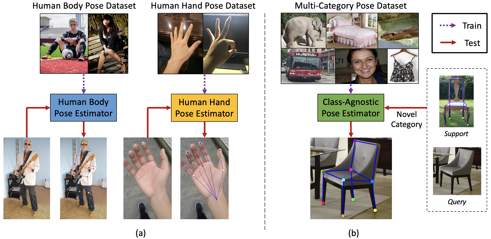 |
Pose for Everything: Towards Category-Agnostic Pose EstimationLumin Xu*, Sheng Jin*, Wentao Liu, Chen Qian, Ping Luo, Wanli Ouyang, Xiaogang Wang European Conference on Computer Vision (ECCV), 2022, Oral. [Paper] [Code & Data] [Blog(商汤学术)] |
| 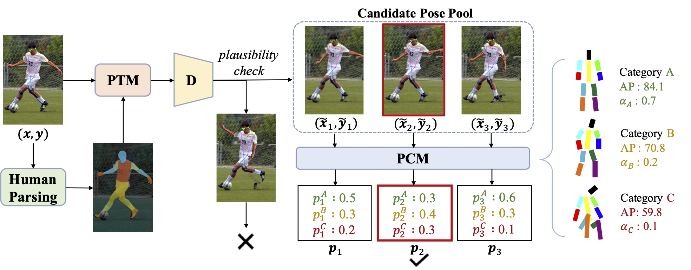 | |
| 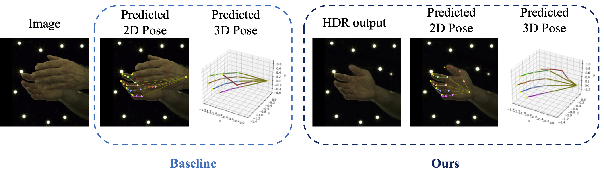 |
3D Interacting Hand Pose Estimation by Hand De-occlusion and RemovalHao Meng, Sheng Jin, Wentao Liu, Chen Qian, Mengxiang Lin, Wanli Ouyang, Ping Luo European Conference on Computer Vision (ECCV), 2022. [Paper] [Code & Data] |
| 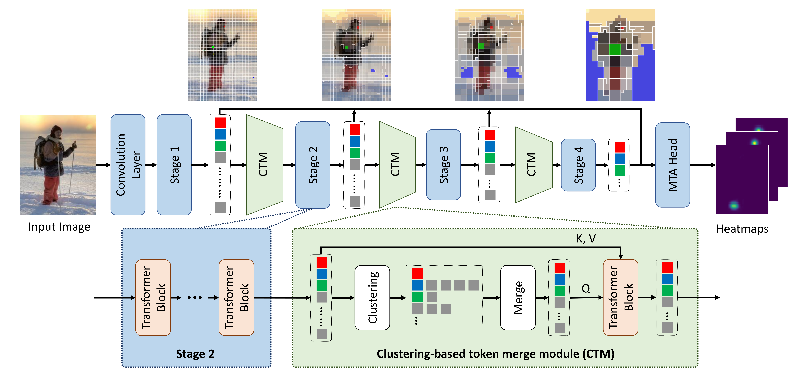 |
Not All Tokens Are Equal: Human-centric Visual Analysis via Token Clustering TransformerWang Zeng, Sheng Jin, Wentao Liu, Chen Qian, Ping Luo, Ouyang Wanli, Xiaogang Wang Conference on Computer Vision and Pattern Recognition (CVPR), 2022, Oral. [Paper] [Code] [Blog(商汤学术)] [News(机器之心)] |
| 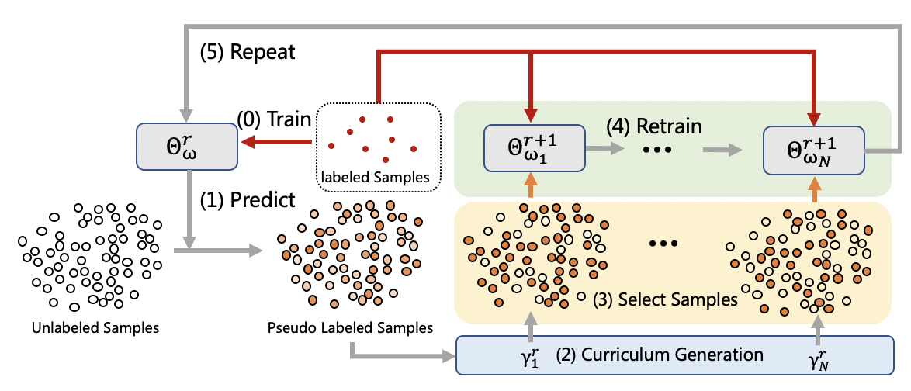 |
Pseudo-Labeled Auto-Curriculum Learning for Semi-Supervised Keypoint LocalizationCan Wang, Sheng Jin, Yingda Guan, Wentao Liu, Chen Qian, Ping Luo, Wanli Ouyang International Conference on Learning Representations (ICLR), 2022. [Paper] |
| 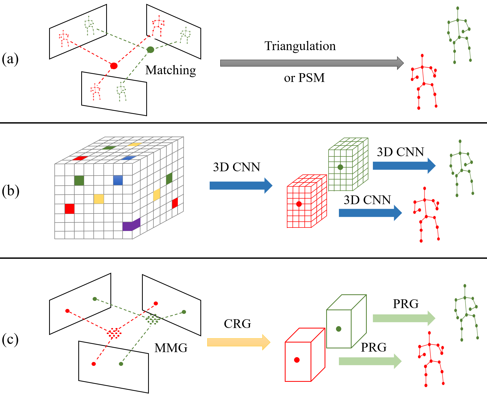 |
Graph-Based 3D Multi-Person Pose Estimation Using Multi-View ImagesSize Wu, Sheng Jin, Wentao Liu, Lei Bai, Chen Qian, Dong Liu, Wanli Ouyang IEEE International Conference on Computer Vision (ICCV), 2021. [Paper] [Code] [Blog(商汤学术)] |
| 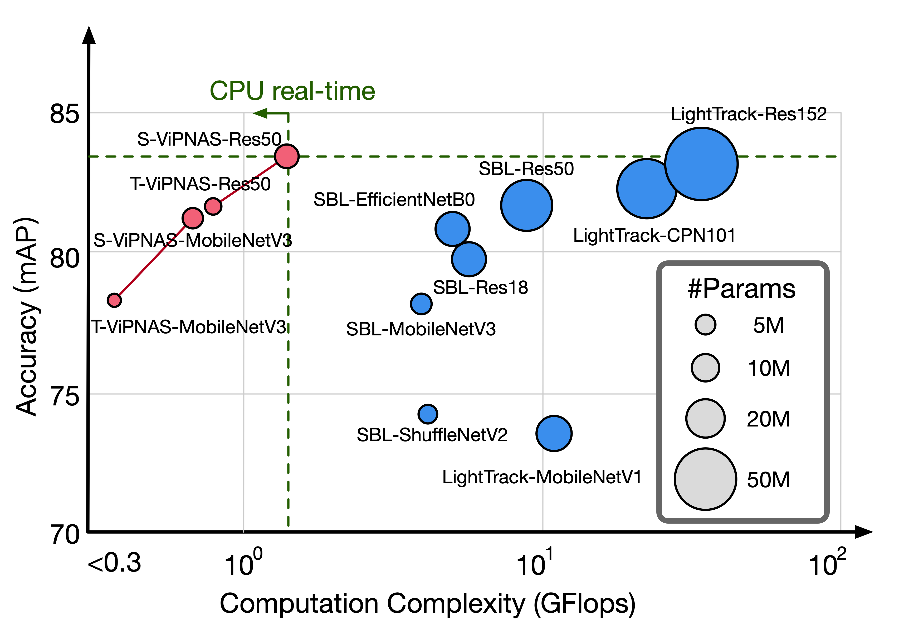 | |
| 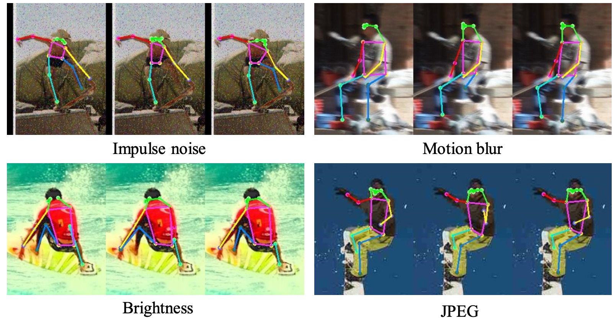 | |
When Counterpoint Meets Chinese Folk MelodiesNan Jiang, Sheng Jin, Zhiyao Duan, Changshui Zhang Conference on Neural Information Processing Systems (NeurIPS), 2020. [Paper] [Supplementary] [Poster] [Code] [Project Page] |
|
| 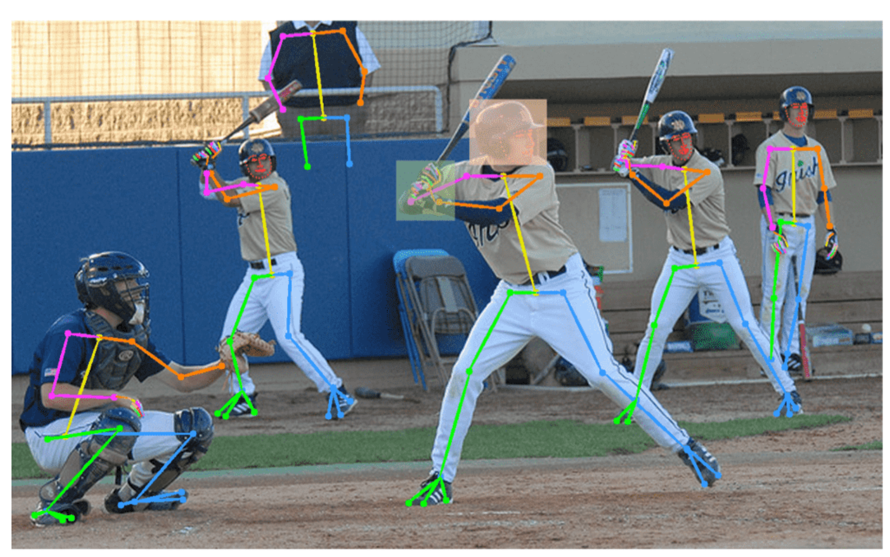 | |
| 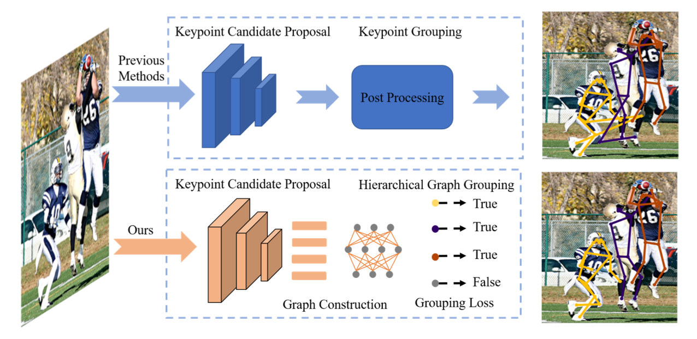 | |
| 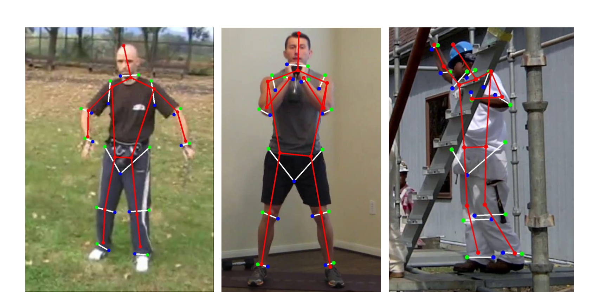 | |
| 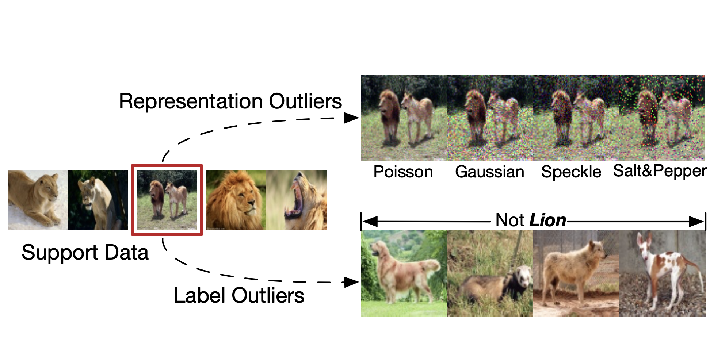 |
Robust Few-Shot Learning for User-Provided DataJiang Lu, Sheng Jin, Jian Liang, and Changshui Zhang IEEE Transactions on Neural Networks and Learning Systems (TNNLS). [Paper] |
| 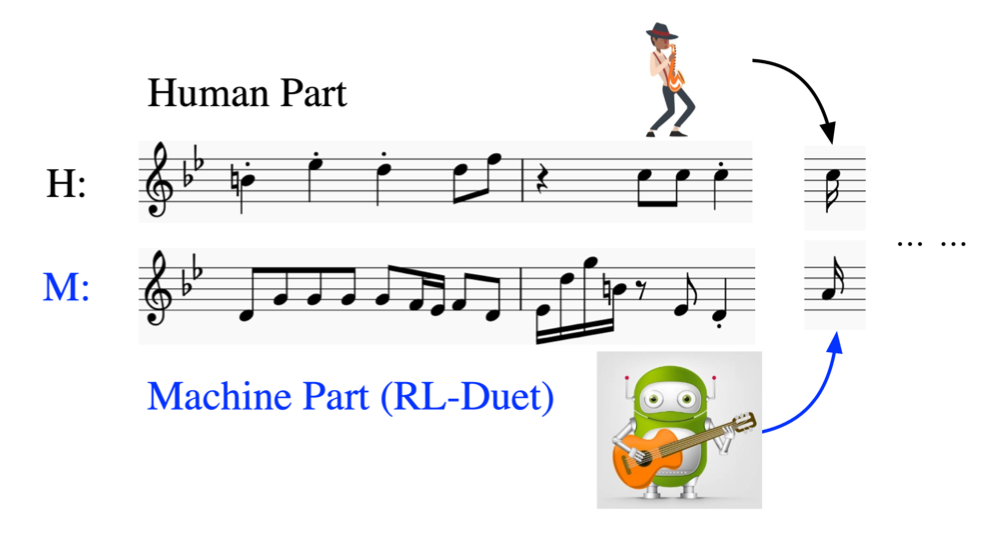 | |
| 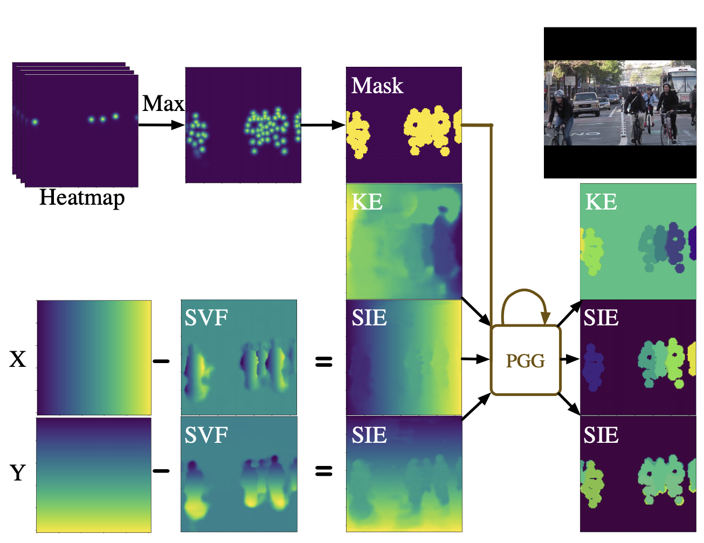 | |
| 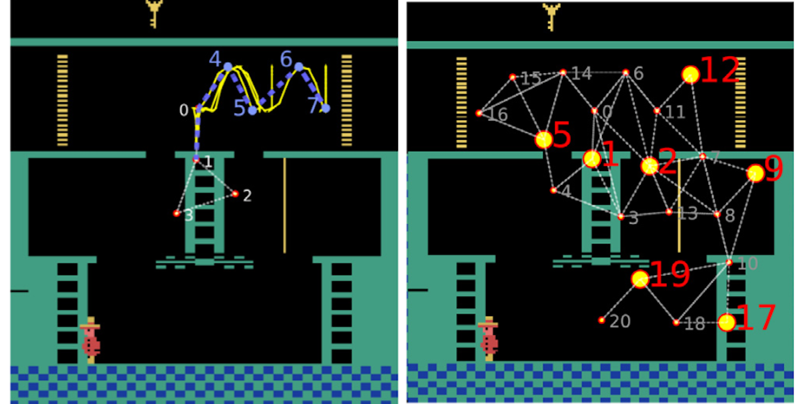 |
Hierarchical Automatic Curriculum Learning: Converting a Sparse Reward Navigation Task into Dense RewardNan Jiang, Sheng Jin, Changshui Zhang Neurocomputing, 2019. [Paper] |
| 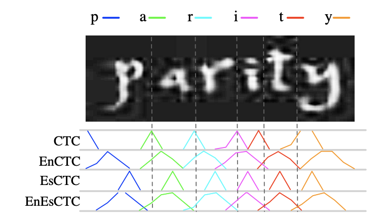 | |
| 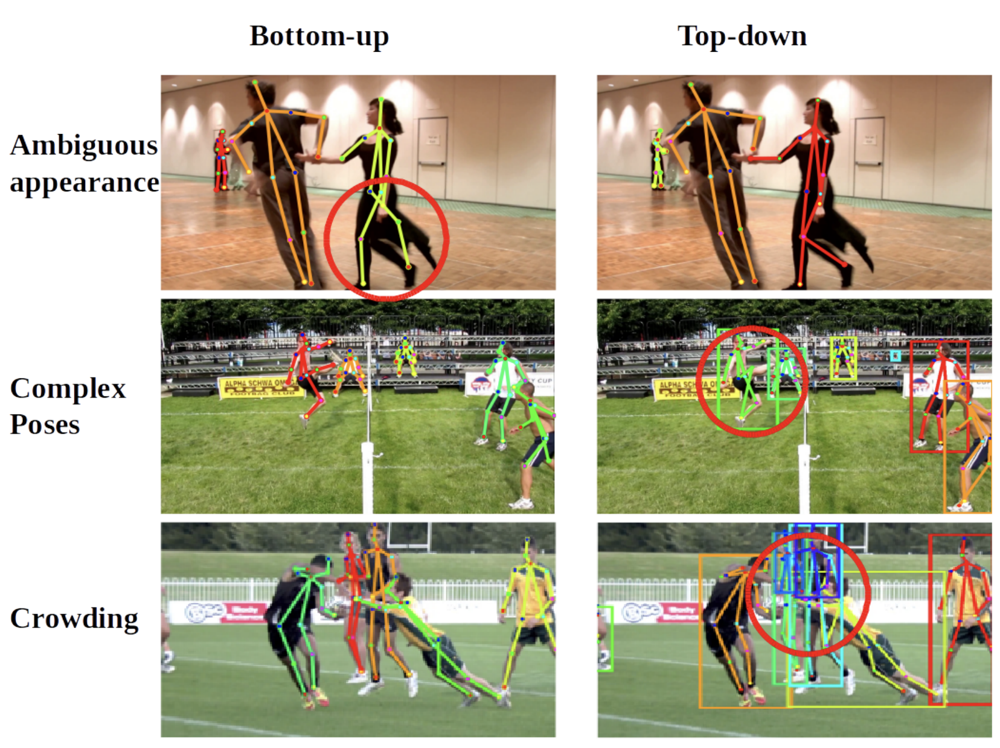 |
Towards Multi-Person Pose Tracking: Bottom-up and Top-down MethodsSheng Jin, Xujie Ma, Zhipeng Han, Yue Wu, Wei Yang, Wentao Liu, Chen Qian, Wanli Ouyang International Conference on Computer Vision (ICCV) PoseTrack Workshop, 2017. [Paper] [Leaderboard](BUTDS and BUTD2) [Demo] |
Projects
 |
ACM MM'2020 HiEve ChallengeOur team (SimpleTrack) won the 3rd place in Track-3 "Crowd Pose Tracking in Complex Events" of ACM MM'2020 HiEve Challenge. [Leaderboard] [Technical Report] |
| 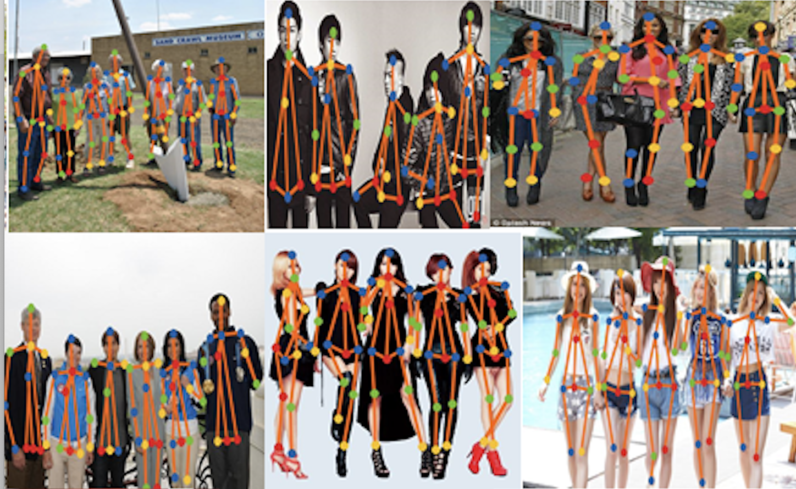 |
CVPR'2018 Look Into Person (LIP) ChallengeOur team (MJDG) won the 2nd place in Track-4 "Multi-Human Pose Estimation Challenge" of CVPR'2018 LIP Challenge. [Leaderboard] [Oral Presentation] |
| 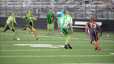 |
ICCV'2017 PoseTrack ChallengeOur team (BUTDS | BUTD2) won the 2nd places in both Track-1 "Single-Frame Person Pose Estimation" and Track-3 "Multi-Person Pose Tracking" of ICCV'2017 PoseTrack Challenge. [Leaderboard] [Technical Report] [Oral Presentation] [Demo] |
Patents
Click to expand or collapse
Key point detection method, device, electronic equipment and storage mediumSheng Jin, Wentao Liu, Chen Qian Chinese Invention Patent. Publication Number: CN111898642A. Publication Date: 2020-11-06. |
Key point detection method, device, electronic equipment and storage mediumSheng Jin, Wentao Liu, Chen Qian Chinese Invention Patent. Publication Number: CN111783882A. Publication Date: 2020-10-16. |
Image processing method and device, detection device and storage mediumTong Li, Sheng Jin, Wentao Liu, Chen Qian Chinese Invention Patent. Publication Number: CN111539992A. Publication Date: 2020-08-14. |
Key point detection method, device, electronic equipment and storage mediumSheng Jin, Wentao Liu, Chen Qian Chinese Invention Patent. Publication Number: CN111444928A. Publication Date: 2020-07-24. |
Image processing method and device, detection device and storage mediumSheng Jin, Wentao Liu, Chen Qian Chinese Invention Patent. Publication Number: CN109948526A. Publication Date: 2019-06-28. |
Image processing method and device, detection device and storage mediumSheng Jin, Wentao Liu, Chen Qian Chinese Invention Patent. Publication Number: CN109934183A. Publication Date: 2019-06-25. |
Deep learning model training method and device, training equipment and storage mediumSheng Jin, Wentao Liu, Chen Qian Chinese Invention Patent. Publication Number: CN109919245A. Publication Date: 2019-06-21. |
Activities
-
NeurIPS'19, AAAI'19, NeurIPS'20, ICML'20, CVPR'20, AAAI'21, WACV'21, ICLR'21, ICML'21, CVPR'21, ICCV'21
-
IEEE Transactions on Artificial Intelligence (TAI), Transactions on Image Processing (TIP), International Journal of Computer Vision (IJCV)